Last updated: 2020-08-14
Checks: 7 0
Knit directory: bootcamp/
This reproducible R Markdown analysis was created with workflowr (version 1.6.2). The Checks tab describes the reproducibility checks that were applied when the results were created. The Past versions tab lists the development history.
Great! Since the R Markdown file has been committed to the Git repository, you know the exact version of the code that produced these results.
Great job! The global environment was empty. Objects defined in the global environment can affect the analysis in your R Markdown file in unknown ways. For reproduciblity it’s best to always run the code in an empty environment.
The command set.seed(20200814) was run prior to running the code in the R Markdown file. Setting a seed ensures that any results that rely on randomness, e.g. subsampling or permutations, are reproducible.
Great job! Recording the operating system, R version, and package versions is critical for reproducibility.
Nice! There were no cached chunks for this analysis, so you can be confident that you successfully produced the results during this run.
Great job! Using relative paths to the files within your workflowr project makes it easier to run your code on other machines.
Great! You are using Git for version control. Tracking code development and connecting the code version to the results is critical for reproducibility.
The results in this page were generated with repository version ee78f5c. See the Past versions tab to see a history of the changes made to the R Markdown and HTML files.
Note that you need to be careful to ensure that all relevant files for the analysis have been committed to Git prior to generating the results (you can use wflow_publish or wflow_git_commit). workflowr only checks the R Markdown file, but you know if there are other scripts or data files that it depends on. Below is the status of the Git repository when the results were generated:
Ignored files:
Ignored: .Rproj.user/
Ignored: bam/
Ignored: fastq/
Ignored: genome/
Ignored: log/
Note that any generated files, e.g. HTML, png, CSS, etc., are not included in this status report because it is ok for generated content to have uncommitted changes.
These are the previous versions of the repository in which changes were made to the R Markdown (analysis/differential-expression.Rmd) and HTML (docs/differential-expression.html) files. If you’ve configured a remote Git repository (see ?wflow_git_remote), click on the hyperlinks in the table below to view the files as they were in that past version.
| File | Version | Author | Date | Message |
|---|---|---|---|---|
| Rmd | ee78f5c | Allison Zvarick | 2020-08-14 | Publish the DE analysis |
| Rmd | 8291332 | Allison Zvarick | 2020-08-14 | Initial commit of RNA-seq scripts. |
Load packages.
library(limma)
library(edgeR)Import counts.
rawData <- read.table("data/counts.txt",
header = TRUE,
stringsAsFactors = FALSE)
dim(rawData)[1] 5292 18genes <- subset(rawData, select = Geneid:Length)
counts <- rawData[, 7:18]
rownames(counts) <- genes$Geneid
colnames(counts) <- gsub("\\.*bam\\.*", "", colnames(counts))
group <- c(rep("mutant", 6), rep("wildtype", 6))
group <- factor(group, levels = c("wildtype", "mutant"))
x <- DGEList(counts = counts,
group = group,
genes = genes)
class(x)[1] "DGEList"
attr(,"package")
[1] "edgeR"Calculate log2 counts per million (log2cpm).
log2cpm <- cpm(x, log = TRUE)Plot density of expression values for each sample.
plotDensities(log2cpm, group = group, main = "Raw")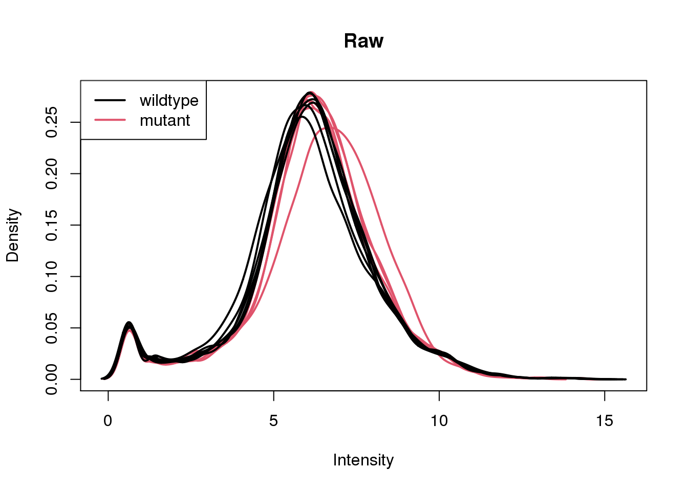
Only keep features which have at least 10 counts in at least 4 wildtype or 4 mutant samples.
keep <- filterByExpr(x, group = group)
sum(keep)[1] 4904x <- x[keep, ]Re-calculate log2cpm and re-plot densities.
log2cpm <- cpm(x, log = TRUE)
plotDensities(log2cpm, group = group, main = "Filtered")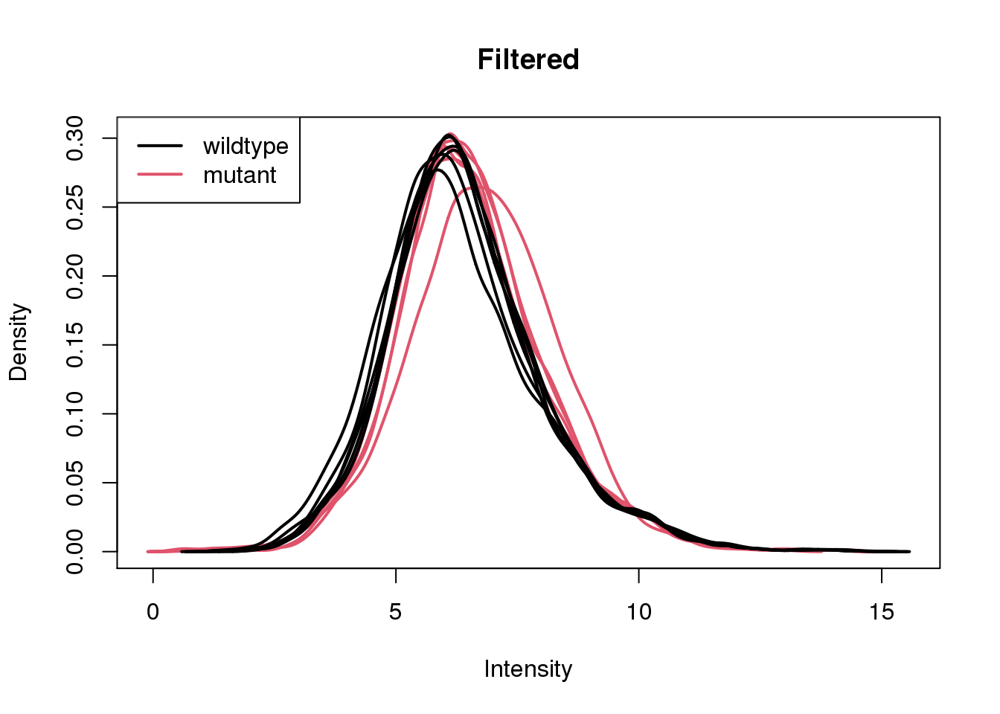
Normalize the samples, re-calculate log2cpm, and re-plot densities.
x <- calcNormFactors(x)
log2cpm <- cpm(x, log = TRUE)
plotDensities(log2cpm, group = group, main = "Normalized")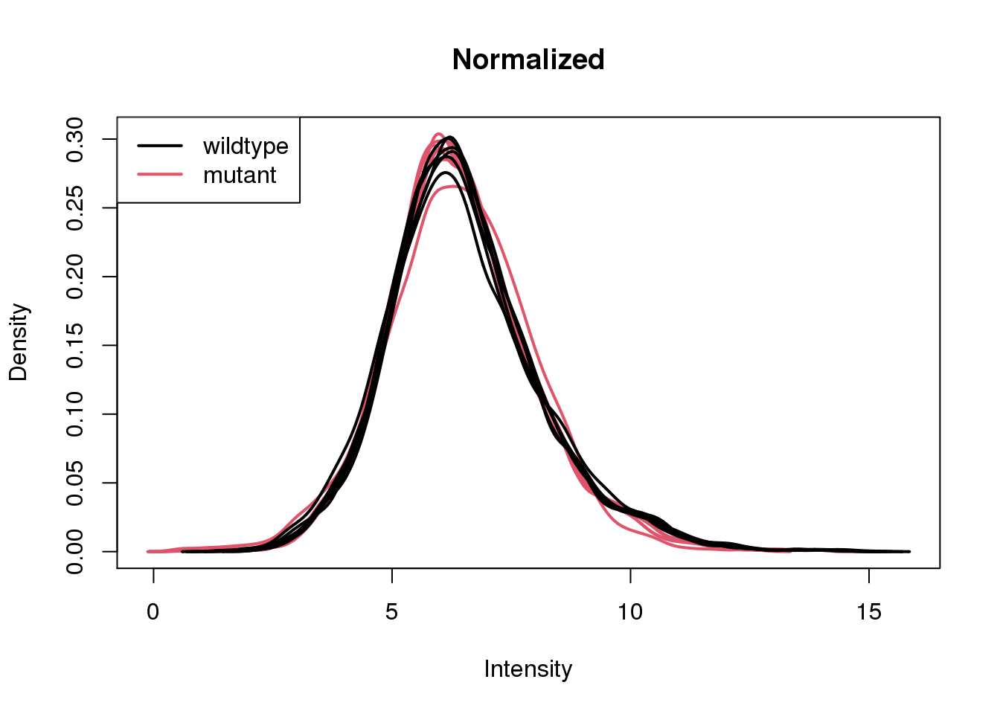
Confirm that the mutant samples are null for SNF2.
barplot(log2cpm["YOR290C", ], main = "SNF2")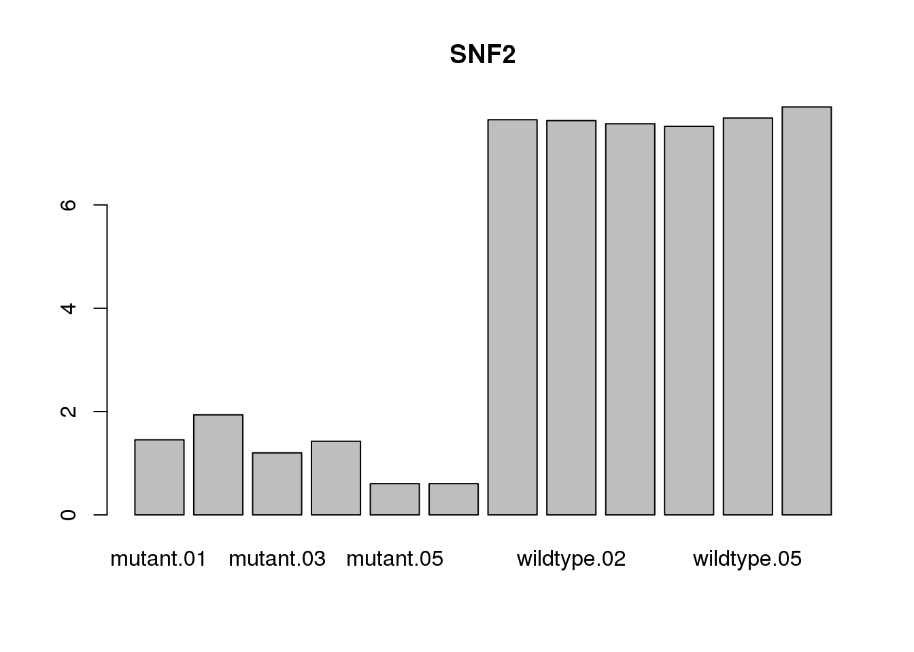
Perform PCA.
plotMDS(log2cpm, gene.selection = "common")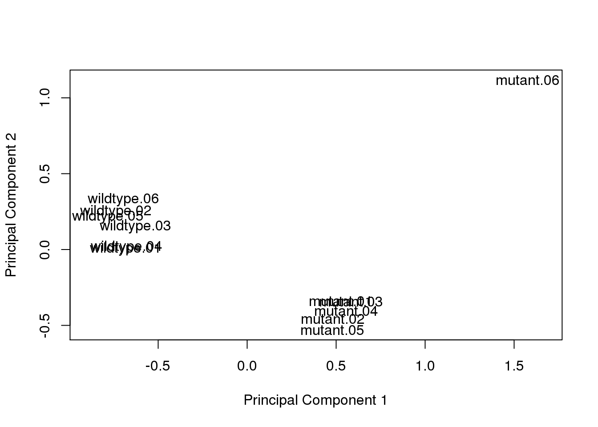
Remove outlier sample.
x <- x[, colnames(x) != "mutant.06"]
dim(x)[1] 4904 11Re-calculate log2cpm and re-perform PCA.
log2cpm <- cpm(x, log = TRUE)
plotMDS(log2cpm, gene.selection = "common")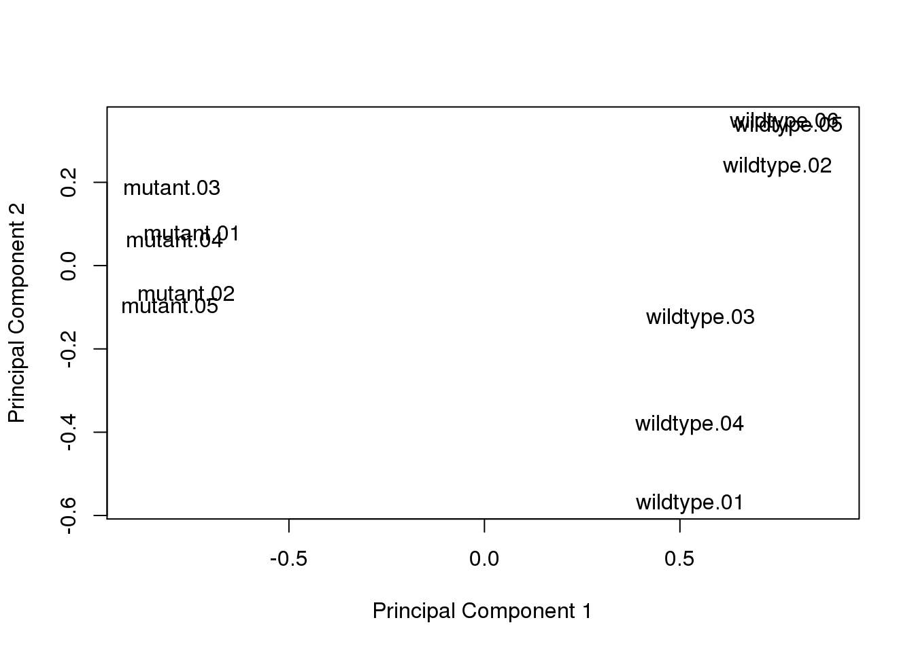
\[ Y = \beta_{0} + \beta_{mutant} + \epsilon \]
design <- model.matrix(~x$samples$group)v <- voom(x, design, plot = TRUE)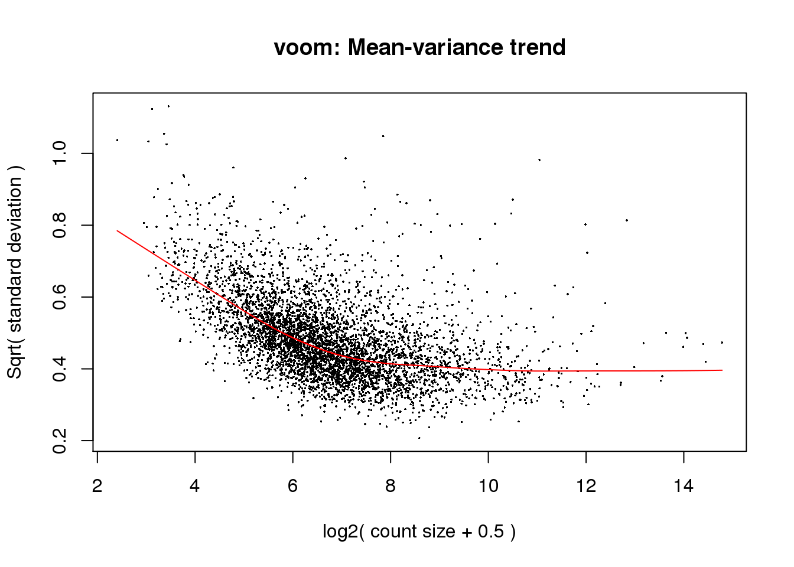
fit <- lmFit(v, design)
fit <- eBayes(fit)Count number of differentially expressed features.
summary(decideTests(fit)) (Intercept) x$samples$groupmutant
Down 0 1035
NotSig 0 3010
Up 4904 859View top 10 differentially expressed genes.
topTable(fit, coef = 2) Geneid Chr Start End Strand Length logFC AveExpr t
YML123C YML123C XIII 24037 25800 - 1764 -4.695983 8.083253 -34.40824
YDR033W YDR033W IV 508147 509109 + 963 -3.672469 8.210557 -33.83913
YGR234W YGR234W VII 959904 961103 + 1200 -4.237337 7.607611 -34.01898
YER081W YER081W V 322686 324095 + 1410 3.214874 8.395070 26.55375
YPL019C YPL019C XVI 514511 517018 - 2508 -2.499383 7.830653 -25.76347
YOR153W YOR153W XV 619840 624375 + 4536 -2.701209 9.508846 -25.23499
YDR077W YDR077W IV 600793 601809 + 1017 -3.231475 10.656406 -24.52067
YIL121W YIL121W IX 132244 133872 + 1629 -2.637367 6.416078 -23.33140
YBR067C YBR067C II 372103 372735 - 633 -2.925393 8.205030 -22.85657
YOR273C YOR273C XV 834452 836431 - 1980 -2.113479 7.866356 -22.02893
P.Value adj.P.Val B
YML123C 8.302180e-17 1.780947e-13 28.33391
YDR033W 1.089486e-16 1.780947e-13 28.28710
YGR234W 9.993394e-17 1.780947e-13 28.06935
YER081W 5.572096e-15 6.831390e-12 24.64724
YPL019C 9.075423e-15 8.901175e-12 24.15217
YOR153W 1.267725e-14 1.036154e-11 23.86019
YDR077W 2.013250e-14 1.410426e-11 23.40554
YIL121W 4.476938e-14 2.439434e-11 22.44055
YBR067C 6.226596e-14 3.053522e-11 22.27667
YOR273C 1.124107e-13 5.011473e-11 21.69191Create a barplot of the top DE feature:
barplot(log2cpm["YML123C", ], las = 2, cex.names = 0.75)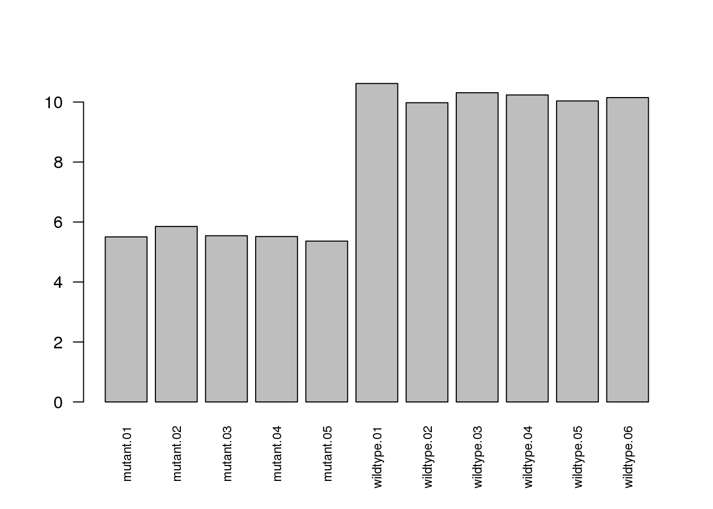
Visualize p-value distribution.
hist(fit$p.value[, 2], main = "p-value distribution")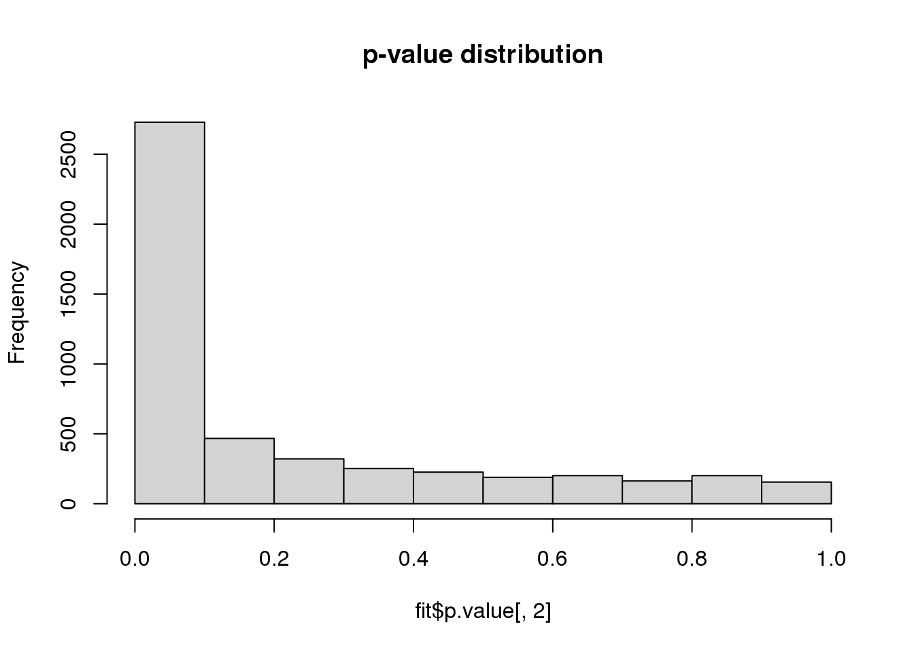
Visualize residual variation versus magnitude of expression.
plotSA(fit)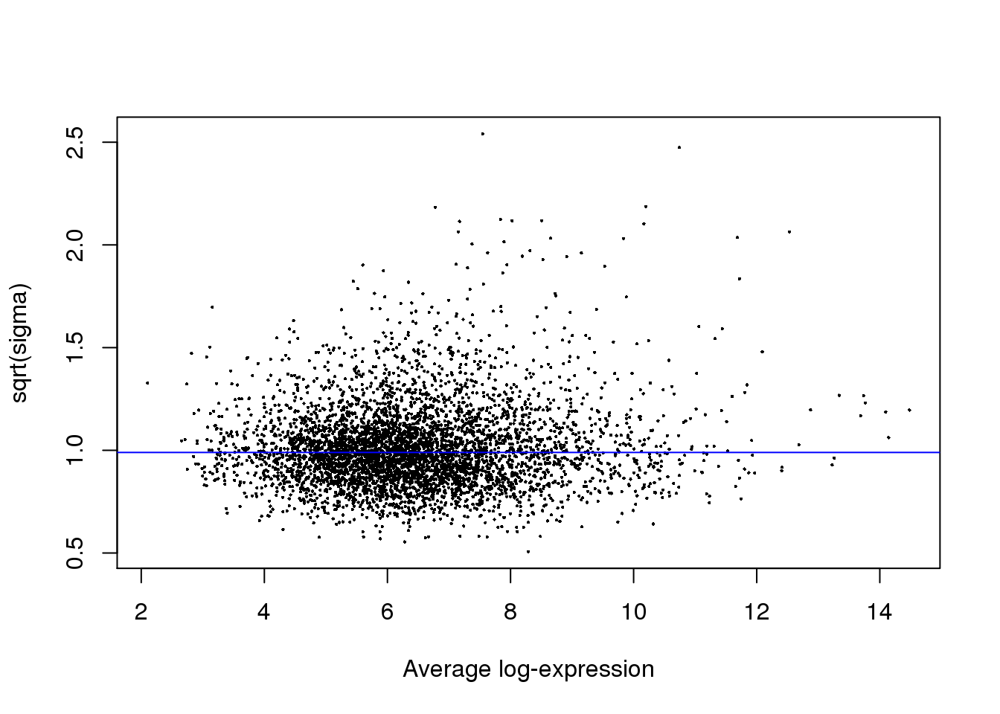
Create a volcano plot.
volcanoplot(fit, coef = 2, highlight = 5, names = fit$genes$Geneid)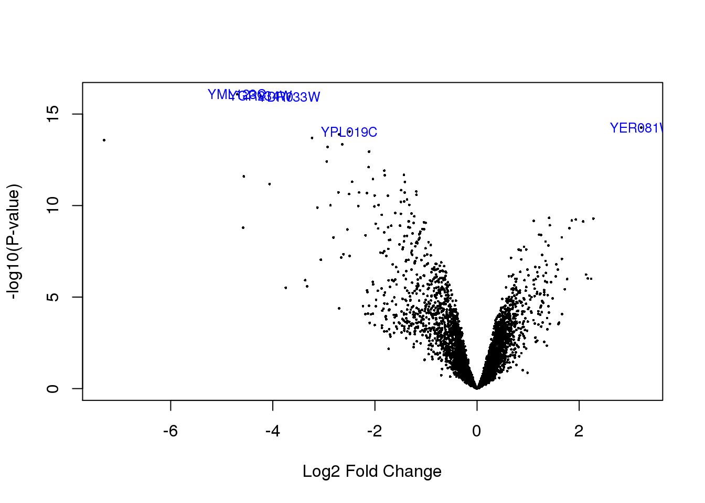
sessionInfo()R version 4.0.2 (2020-06-22)
Platform: x86_64-pc-linux-gnu (64-bit)
Running under: Red Hat Enterprise Linux Server release 6.10 (Santiago)
Matrix products: default
BLAS: /gpfs/group/dml129/default/BDR_bootcamp2020/sw/ood_rserver/R/opt/R/4.0.2/lib/R/lib/libRblas.so
LAPACK: /gpfs/group/dml129/default/BDR_bootcamp2020/sw/ood_rserver/R/opt/R/4.0.2/lib/R/lib/libRlapack.so
locale:
[1] LC_CTYPE=en_US.UTF-8 LC_NUMERIC=C
[3] LC_TIME=en_US.UTF-8 LC_COLLATE=en_US.UTF-8
[5] LC_MONETARY=en_US.UTF-8 LC_MESSAGES=en_US.UTF-8
[7] LC_PAPER=en_US.UTF-8 LC_NAME=C
[9] LC_ADDRESS=C LC_TELEPHONE=C
[11] LC_MEASUREMENT=en_US.UTF-8 LC_IDENTIFICATION=C
attached base packages:
[1] stats graphics grDevices utils datasets methods base
other attached packages:
[1] edgeR_3.30.3 limma_3.44.3 workflowr_1.6.2
loaded via a namespace (and not attached):
[1] Rcpp_1.0.5 knitr_1.29 whisker_0.4 magrittr_1.5
[5] lattice_0.20-41 R6_2.4.1 rlang_0.4.7 stringr_1.4.0
[9] tools_4.0.2 grid_4.0.2 xfun_0.16 git2r_0.27.1
[13] htmltools_0.5.0 yaml_2.2.1 digest_0.6.25 rprojroot_1.3-2
[17] later_1.1.0.1 promises_1.1.1 fs_1.5.0 glue_1.4.1
[21] evaluate_0.14 rmarkdown_2.3 stringi_1.4.6 compiler_4.0.2
[25] backports_1.1.8 locfit_1.5-9.4 httpuv_1.5.4